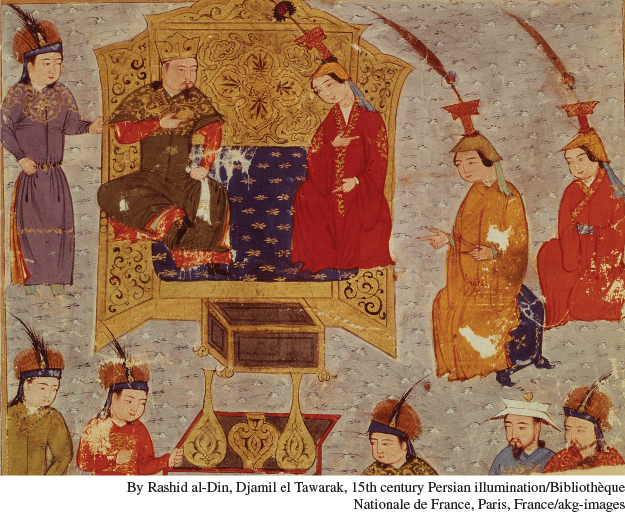

Mongol Rulers and Their WomenThe wives of Mongol rulers exercised considerable influence at court. This fourteenth-century painting shows Chinggis Khan’s fourth son, Tului, the ruler of the Mongol heartland after his father’s death, with his Christian wife Sorgaqtani. After her husband’s early death from alcoholism, she maneuvered her children, including Khubilai Khan, into powerful positions and strongly encouraged them in the direction of religious toleration.(By Rashid al-Din, Djamil el Tawarak, 15th century Persian illumination/Bibliothèque Nationale de France, Paris, France/akg-images)